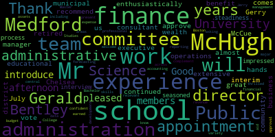

[lxGqRLo36-s_SPEAKER_02]: on August 14 to 5.30 p.m. will be held via remote participation on Zoom. The purpose of the special committee meeting will be to attend to continued business and to meet in an executive session to conduct strategy and discuss legal matters. The meeting can be viewed through Method Community Media on Comcast channel 15 and Verizon channel 45 at 3.30 p.m. Participants can log or call in by using the following link or call in numbers. You can dial 1-929-205-6099 and enter meeting ID when prompted, 923-0978-0150. Additionally, questions or comments can be submitted during the meeting by emailing medfordsc at medford.k12.ma.us. Those submitting questions or comments must include the following information, your first and last name, your Redford Street address, your question or comment. Roll call members out, please.
[Lungo-Koehn]: Thank you, uh, member Graham. Here. Member Hays. Here. Member Kreatz, absent. Member McLaughlin. Absent. Member Mustone. Here. Member Rossell, present.
[Ruseau]: Mayor Longo, present.
[lxGqRLo36-s_SPEAKER_02]: Present. We have five present, two absent. If we all can rise to salute the flag. pledge allegiance to the flag of the United States of America and to the Republic for which it stands, one nation under God, indivisible, with liberty and justice for all. We have a new business recommendation to approve the appointment of Mr. Gerald McHugh as the interim director of finance for the Metro Public Schools. And I'm going to turn it over to Dr. Maurice-Edward Benson.
[Edouard-Vincent]: Thank you. Good afternoon, school committee members. I'm very pleased to introduce Mr. Gerald McHugh. I enthusiastically recommend that the Medford School Committee vote to approve his appointment as interim finance director of the Medford Public Schools. Mr. McHugh comes to us with more than 40 years of extensive hands-on experience in the educational and municipal finance administration and operations. Gerry McCue retired from the Chelsea Public Schools in July of 2018 after almost 30 years of work as their executive director for administration and finance and school business manager. Since 2018, he has continued to work as a school finance consultant. His wealth of experience will be a great benefit to our district and community. During the interview process, Mr. McHugh impressed our team with his steadiness and experience. As a seasoned school finance professional, we're confident that he will complement and aid our central administrative team across a variety of relevant work areas, including accounting, revenue and expense forecasting, budget development, and financial data management and reporting. Mr. McHugh earned his Bachelor of Science in Public Administration from Bentley College, Bentley University, and his Master of Science in Administrative Studies from Boston University. We are thrilled to welcome Jerry to Medford and know that his skills and experience will be major assets to the work of our team. Again, I present to you Mr. Gerald McHugh and I am asking the committee for approval of his appointment. Thank you.
[lxGqRLo36-s_SPEAKER_02]: Thank you, Dr. Edouard-Vincent. I know that member Graham and I also met Mr. McHugh when we had an informal interview meet and greet last week. So I just want to turn it over. Jerry, if you want to say a few words and we'll take a vote. Thank you.
[McCue]: Thank you, Madam Superintendent, for that. I wasn't expecting to kind of get back into work, but the superintendent over in Chelsea knows the Medford superintendent, and they kind of got together. And, you know, I live right on the Medford line. I've been here in the same house I grew up in. And I did, you know, there's a, you know, a lot of big decisions coming up with the budget. And that's kind of my area. And, you know, given the the vacancies that are coming up in important positions, I felt kind of obligated as a lifelong public servant to kind of step up and, you know, try to help the schoolchildren, you know, of Medford.
[Lungo-Koehn]: Thank you, Jerry. Member Graham? Thank you.
[Graham]: I had a chance to meet Jerry last week, the week before, two weeks ago, I guess. And I really appreciated the conversation we were able to have about the planning that's ahead of us as we think about rolling off of ESSER. And definitely appreciated his starting point, which was enrollment projection, which is not something we've really ever talked about as a committee. And I think it's really important for us to start having that conversation. So I'm excited to welcome Jerry to the team, and I would make a motion to approve.
[Lungo-Koehn]: You're on mute, Mayor.
[lxGqRLo36-s_SPEAKER_02]: Motion to approve by Member Graham. I'm going to address Member Ruseau, who has his hands up.
[Ruseau]: Thank you, Mayor. I'll second the motion, of course. And I wanna thank Jerry for, not volunteering, but for raising his hand. I look forward to someday to retiring myself. So I hope nobody's calling me and asking me to raise my hand after I retire, but I greatly appreciate that you did. I look forward to meeting you as well. And as I said, I second that motion.
[lxGqRLo36-s_SPEAKER_02]: Thank you, Member Ruseau. So there's a motion on the floor by Member Graham, seconded by Member Ruseau.
[Lungo-Koehn]: If you could call the roll, please. Member Graham? Yes. Member Hays? Yes. Member Katz, absent.
[Ruseau]: Member McLaughlin, absent. Member Mestone?
[lxGqRLo36-s_SPEAKER_02]: Yes.
[Ruseau]: Member Ruseau, yes. Mayor Longo, present.
[lxGqRLo36-s_SPEAKER_02]: Yes, that's five in the affirmative, two absent. Motion is approved. Thank you for your willingness, Mr. McHugh, and we will see you soon, I'm sure.
[McCue]: Okay. Thank you. Thank you, members. I'm looking forward to working with you.
[lxGqRLo36-s_SPEAKER_02]: Great. Thank you. Thank you. Next up, we have negotiations and legal matters. An executive session continued from July 19th, 2023. The Medford School Committee will convene an executive session to discuss strategy and preparation for negotiations with Teamsters Local 25 security monitors. and local 25 administrators and custodians because an open meeting will have a detrimental effect on the bargaining position of the committee and the chair so declares. That's pursuant to Mass General Law, Chapter 30A, Section A3. Also, we're gonna go into executive session pursuant to Mass General Law, Chapter 30A, Section A2. The Medford School Committee will convene an executive session to discuss and review open administrative contracts of all non-unit personnel A, Charles Fallon, B, Nicholas Tucci, C, Joan Bowen, D, Peter Cushing, E, Suzanne Galusi. And last but not least, we'll go into executive session pursuant to Chapter 30A, Section A4, to convene to discuss the deployment of security personnel or devices, strategies with respect thereto. The Medford School Committee will not convene in public session subsequent to the executive session. Is there a motion on the floor?
[Graham]: Motion to move into executive session.
[lxGqRLo36-s_SPEAKER_02]: Mark member McLaughlin present as a 340 PM motion to go into executive session by member McLaughlin second by member Graham roll call vote please.
[Graham]: Mayor we have a hand.
[Lungo-Koehn]: It would somebody have a question, just your name and address to the record. Hello, my dear friends. I fuck it. You're more emotion. Roll call vote. Yes. Thank you. Remember Graham? Yes. Member Hays? Yes. That's absent.
[Ruseau]: Yes. Never gonna stop.
[lxGqRLo36-s_SPEAKER_02]: Yes.
[Ruseau]: Remember? So yes, Maryland go current.
[lxGqRLo36-s_SPEAKER_02]: Yes, six in the affirmative, one absent, motion. Mayor. Member Hays, did you call her?
[Ruseau]: Oh, did I not call, I'm sorry, I marked her, yes, sorry. You did. Oh, good. The mayor, are we returning afterwards to public session or not?
[lxGqRLo36-s_SPEAKER_02]: No, the school committee will not reconvene in public session subsequent to the executive session, so no.
[Ruseau]: Okay, thank you.
[lxGqRLo36-s_SPEAKER_02]: We'll adjourn right from executive session when we're finished on or before 5.30 p.m. So motion's been approved. We're going to head into executive session.
|
total time: 1.12 minutes total words: 86 |
total time: 0.8 minutes total words: 123 |
total time: 1.97 minutes total words: 241  |
total time: 0.63 minutes total words: 106 |
{kind=link}
{kind=link}
{kind=link}
{kind=link}